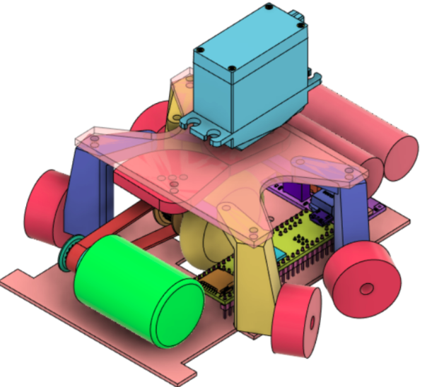
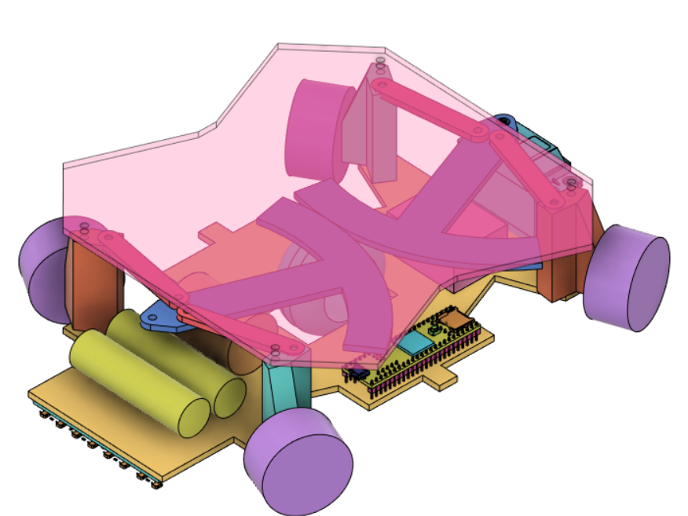
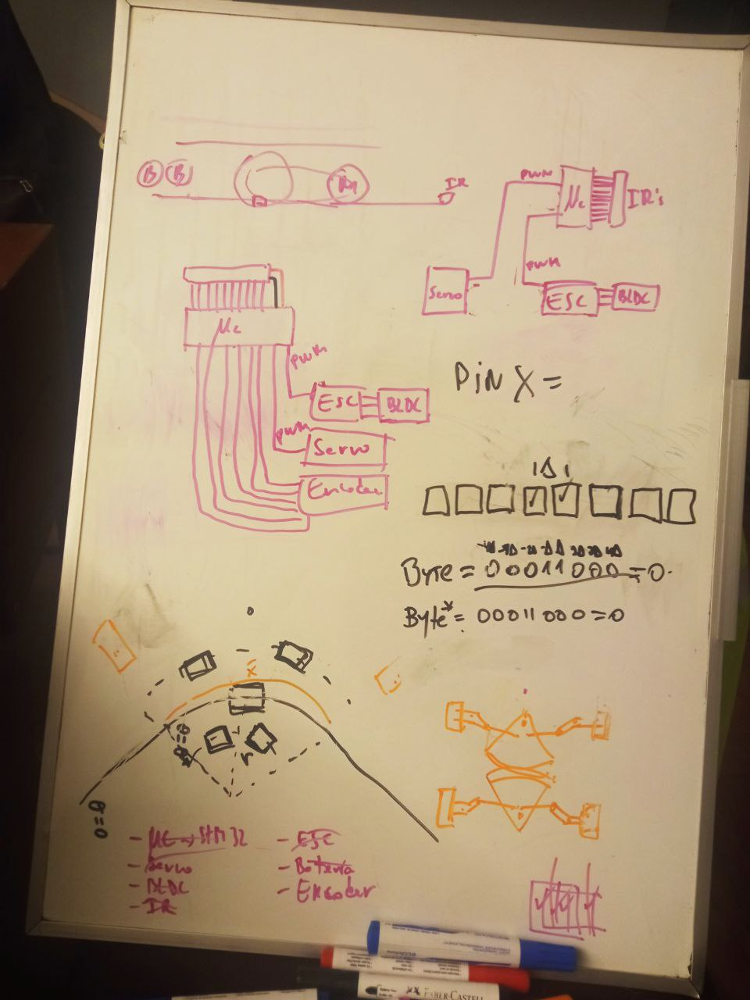

Robotracer: Personal notes
Table of Contents
The idea is to create a robotracer that is able to learn a speedway and improves through lap iterations.
Here I will put all relevant ideas, references and discussion

Figure 1: Gnium V1

Figure 2: Gnium V2
1. TODOs:
1.1. personal [1/6]
[X]Include picture of the robot[X]define project’s structure- Namespaces or classes? or both?
[ ]create `communication` namespace[ ]configuration file:[ ]read google style guide[ ]read google test user guide
1.2. group
- Buy materials
[4/4]:[X]Batteries[X]Sensors[X]Mottors[X]STM32
2. cpp notes
2.1. cpp on bare metal
2.1.1. Introduction to integrating C++ on bare metal STM32
- explains toolchain file for cmake
- not sure if this tutorial helps us. It is focus on connecting C and Cpp
2.2. coding standard
3. platformio
3.0.1. references
4. robotracer
4.1. references
4.2. algorithm
5. components
5.1. STM32
5.1.1. references
5.3. motors
6. meetings
6.1. initial meeting
- Name?
- Goat
- Dudegono
- Pentadude
- Rapsticio
- Fasticio
- Solstápido
- Solstirat
- Mausat
- Goosat
- Skips
- RVS
- GVS(0.1)
- Solstágono
- Pentiscio
- Gosticio
- Ñiium (code: GNiium)
- When do we want to have the vehicle usable?
- Who is doing what?
- Drés
- CAD Fusion
- Felipin
- CAD kicad
- IR namespace
- Wis
- Code cpp
- PID, PWM Namespaces
- cpp main
- Do it with platformio!
- learm how to test cpp code
- Drés
- input-output each of us needs
- Felipe needs from Drés
- base form?
- terminal types/specifications
- Felipe needs from Drés
- What do we want measure in the vehicle?
- accelerometer
- Important points
- Curvature = f(servoangle, encoderpoints) (or servoangle olny?)
- We can set constant velocity and use servoangle to estimate curve lenght (amount of points)
- we need a voltage regulator. Which?
- Connection from micro..
- encoder?
- SPI and
- ABI
- servo?
- PWM
- motor’s ESC?
- PWM
- IR?
- 1 digital input per sensor
- AND 1 analog input per sensor
- encoder?
- Plug-and-play libraries
- PID (name? Maybe is better idea to code the PID)
- Namespaces
- PID (should have a class so we can instanciate a PID for ESC and for the servo)
- return error
- IR
- look-up table
- digital read
- analog read (digital read is priority)
- PWM ESC (#include PID.h)
- PWM servo (#include PID.h)
- Encoder (can we recicle a library?)
- digital read
- callback ABI function
- utils
- learn the lap
- PID (should have a class so we can instanciate a PID for ESC and for the servo)
- Curvature = f(servoangle, encoderpoints) (or servoangle olny?)
- Questions:
- how many IR do we need? 8 front, 2 lateral?
- Downsampling ADC

Figure 3: Board first meeting :D
7. Progress
- What is platformio?
- Platformio is a cross-platform, cross-architecture software (Python library), specially designed for embedding code in different hardwares
- How to use it?
- Allows to create projects for specific boards
- `mkdir projectname && cd projectname`
- `pio project init –ide emacs # for working with emacs`
- `pio project init –ide emacs –board <ID>`
- `mkdir projectname && cd projectname`
- Allows to create projects for specific boards
- Installation
- Platformio Core installed
- I am using platformio inside emacs (Take a clooser look here). So I also installed:
- emcas-ccls (using MELPA)
- PlatformIO-mode (using MELPA also)
- Testing in platformIO
- So to run unit testing in PlatformIO (an in general in C or C++) you need to use unity (Unit Test)
- So far the stm32 environment is not working properly for running tests, so I created the testing environmet to run tests locally:
- `\gnium$ pio test -e testing`
7.1. TODO:
- Study aboyt mocking STM32
- Study Google test framework